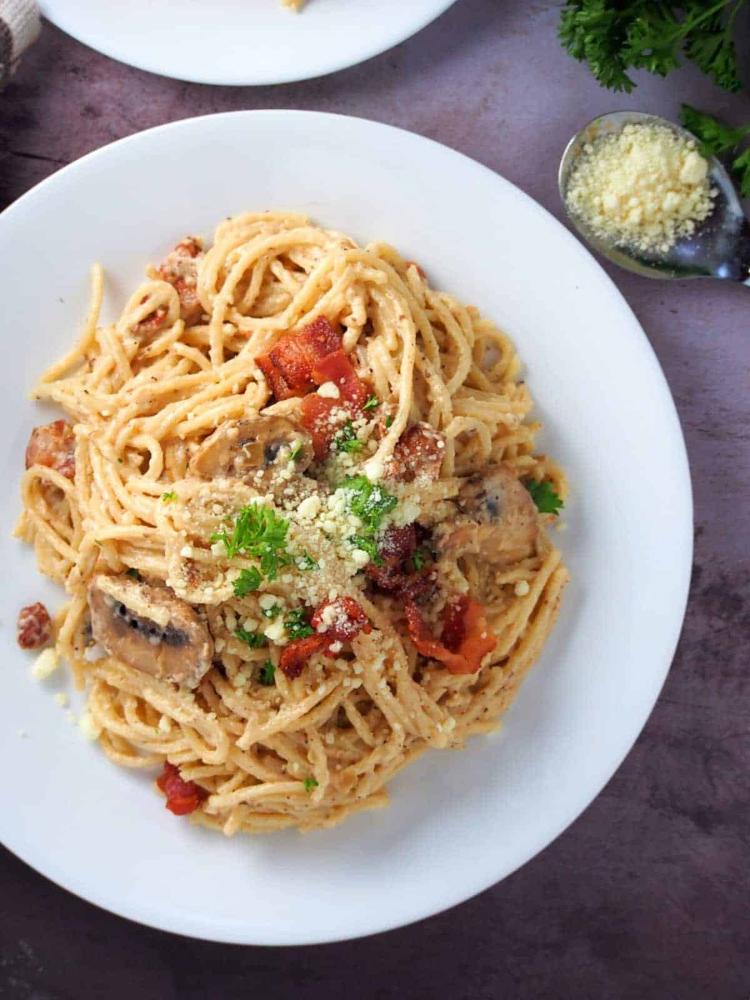

Creamy Carbonara (Filipino Style)

Description:
The Filipino version of Carbonara, as featured in this recipe post, is different from traditional carbonara in terms of preparation and ingredients used.
Filipino Carbonara is more of a pasta Alfredo with bacon. It is richer and creamier than the traditional version due to the use of heavy cream. Italian carbonara, on the other hand, makes use of beaten eggs with Pecorino Romano cheese and lots of ground black pepper for the sauce.
Ingredients:
- 1 lb. Spaghetti
- 1 Knorr Beef Cube
- 6 ounces bacon
- 1 4 oz. can button mushroom
- 1/2 cup grated Parmesan cheese
- 21 ounces all-purpose cream
- 5 cloves garlic
- 2 tablespoons parsley
- 3 quarts water
- 2 teaspoons salt
Steps:
- Pour water in a deep cooking pot. Let boil.
- Add salt. Put the spaghetti into the pot. Cook the spaghetti according to the time indicated in the package instructions. Remove the spaghetti from the cooking pot. Drain the water. Set aside.
- Prepare the sauce by heating a clean cooking pot. Add bacon and cook in medium heat until the bacon fat gets extracted. Continue to cook until the texture of the bacon becomes crispy.
- Remove the bacon from the pot and place in a clean bowl. Set aside. Discard the bacon fat or keep for future use. Leave 2 to 3 tablespoons of bacon fat in the pot.
- Using the remaining bacon fat (oil), saute garlic until light brown. Add mushrooms. Cook for 30 seconds.
- Add Knorr Beef Cube. Crush the cube and cook for another 30 seconds while continuously stirring.
- Pour the all-purpose cream into the pot. Stir and cook for 3 to 4 minutes.
- Add Parmesan cheese and half of the cooked bacon into the pot. Stir until smooth.
- Arrange some pasta in a large bowl. Pour Carbonara sauce over the pasta. Sprinkle some bacon and chopped parsley. Toss until all ingredients are well blended.
- Transfer to a serving plate. Top with more Parmesan cheese, bacon, and chopped parsley
- Serve. Share and enjoy!